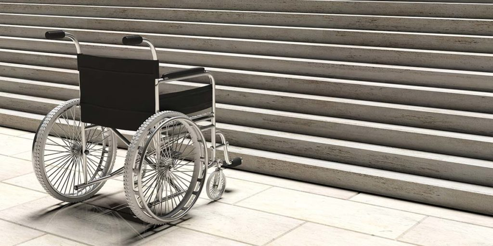

Quienes somos
Somos una organización sin fines de lucro, compuesta de varias personas con distintas profesiones y oficios. Ofrecemos servicios de acompañamiento para personas con discapacidad motriz y sus familias. Tanto desde el aspecto legal como el emocional y educativo.

| Valores | Misión | Ética |
|---|---|---|
| Nuestros valores incluyen la promoción de la accesibilidad universal, la inclusión social, el respeto por la dignidad de cada individuo, el empoderamiento de las personas con discapacidad para ser agentes de cambio, la búsqueda constante de innovación y mejora, la colaboración con diversas partes interesadas, la educación y concienciación sobre la importancia de la accesibilidad, y el compromiso con altos estándares éticos y transparencia en todas sus acciones y decisiones. Estos valores reflejan el compromiso de la fundación con la igualdad de oportunidades, la justicia social y el bienestar de las personas con discapacidad física. | Promover la igualdad de oportunidades y la inclusión social al mejorar la accesibilidad de los espacios. Buscamos eliminar las barreras físicas y sociales que limitan la participación plena de las personas con discapacidad en la sociedad. A través de programas innovadores, colaboraciones estratégicas y educación, buscamos crear entornos accesibles que respeten la dignidad y autonomía de cada individuo. Nuestra misión es empoderar a las personas con discapacidad para que puedan disfrutar de una vida plena y contribuir activamente a sus comunidades. | Valoramos la integridad, la transparencia y la responsabilidad en todo lo que hacemos. Nos esforzamos por asegurar que cada iniciativa y programa esté en línea con nuestros principios éticos fundamentales, respetando los derechos de todas las personas. Promovemos la equidad y la justicia social, asegurando que nuestros esfuerzos beneficien a quienes más los necesitan, sin discriminación ni prejuicios. Nuestra ética guía nuestro compromiso con la excelencia y el impacto positivo en la vida de las personas con discapacidad y sus comunidades. |